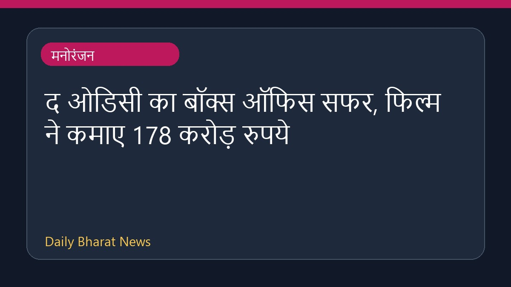

द ओडिसी का बॉक्स ऑफिस सफर, फिल्म ने कमाए 178 करोड़ रुपये

क्रिस्टोफर नोलन की फिल्म द ओडिसी ने अपनी रिलीज के 17 दिनों के भीतर बॉक्स ऑफिस पर अच्छी पकड़ बनाए रखते हुए कुल 178 करोड़ रुपये की कमाई कर ली है। यह फिल्म स्पाइडर-मैन ब्रांड न्यू डे जैसी फिल्मों के सामने मजबूत स्थिति में है। मीडिया रिपोर्ट्स के अनुसार, यह फिल्म दुनिया भर में भी शानदार प्रदर्शन कर रही है और वैश्विक स्तर पर 650 मिलियन डॉलर का आंकड़ा पार कर चुकी है। इसके अलावा, भारत में भी इस फिल्म के आंकड़े काफी मजबूत बने हुए हैं।
मूल स्रोत: Entertainment Sources
The Odyssey India Box Office Day 20: Christopher Nolan's Film To Wrap Up As The 8th Highest-Grossing Hollywood Film Ever? - Koimoi ↗
The Odyssey India Box Office Day 20: Christopher Nolan's Film To Wrap Up As The 8th Highest-Grossing Hollywood Film Ever? - Koimoi ↗